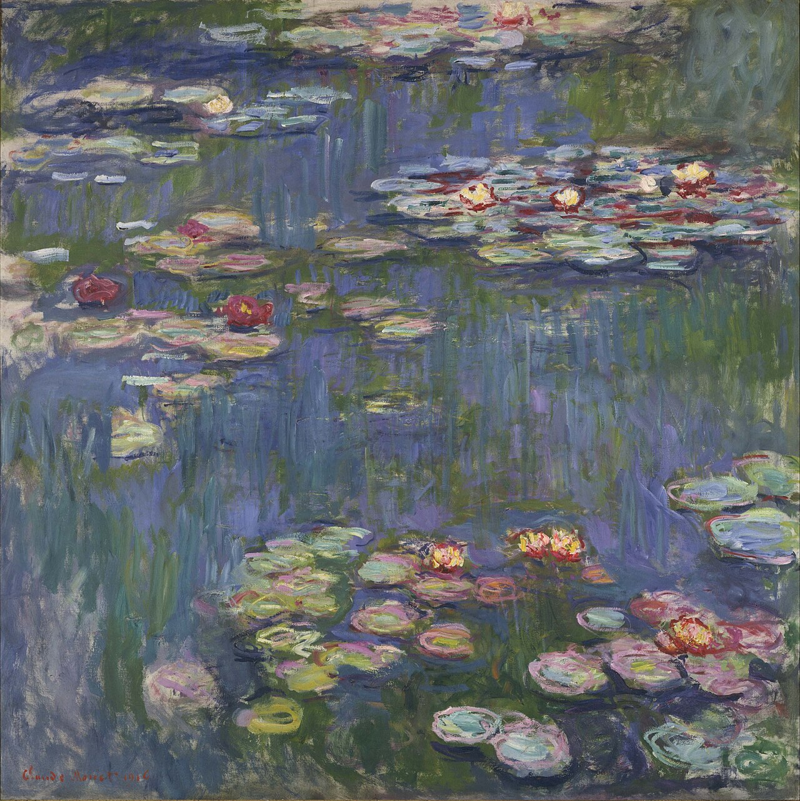

Input: sample-data/artwork.jpg
Run: sess_sample_20260619215445
Mira Legacy Visit Card
Artwork Analysis
Water Lilies by Claude Monet. Confidence: medium.
A nearly all-over view of water lilies floating across a reflective pond. The surface is broken into loose patches of green, blue, violet, and pale pink, with brushwork that makes the water feel both flat and shimmering.
French Impressionism, especially Monet's late Water Lilies series from his Giverny garden.
- The painting has almost no horizon, so the pond becomes the whole visual world.
- The lilies are not outlined sharply; they appear through color patches and quick brushwork.
- The reflections make it hard to separate water, sky, plants, and light.
Guide Script
This looks like Water Lilies, likely by Claude Monet. First, notice the painting has almost no horizon, so the pond becomes the whole visual world, the lilies are not outlined sharply; they appear through color patches and quick brushwork, and the reflections make it hard to separate water, sky, plants, and light. Stylistically, it points toward French Impressionism, especially Monet's late Water Lilies series from his Giverny garden., especially in the way light, shadow, and surface texture shape the mood. A useful question to ask is what this image wants you to feel before you name any object: atmosphere, stillness, movement, or memory. One caveat: this appears consistent with Monet's Water Lilies, but exact title, date, and collection should be confirmed against museum catalog metadata.
Suggested Follow-ups
- Why did Monet paint water lilies so many times?
- Why is there no clear horizon?
- How does Impressionism change the way I should look at this?
Call Summary
Mock call to +14******34: the guide explained the artwork identification, visual details, likely style, and uncertainty. The visitor asked what to notice first.
Assistant: This looks like Water Lilies, likely by Claude Monet. First, notice the painting has almost no horizon, so the pond becomes the whole visual world, the lilies are not outlined sharply; they appear through color patches and quick brushwork, and the reflections make it hard to separate water, sky, plants, and light. Stylistically, it points toward French Impressionism, especially Monet's late Water Lilies series from his Giverny garden., especially in the way light, shadow, and surface texture shape the mood. A useful question to ask is what this image wants you to feel before you name any object: atmosphere, stillness, movement, or memory. One caveat: this appears consistent with Monet's Water Lilies, but exact title, date, and collection should be confirmed against museum catalog metadata. Visitor: What should I notice first? Assistant: Start with the first thing your eye lands on, then notice how color, light, and composition guide you around the image.
Evidence
Nebius: Nebius Token Factory mock; live vision only runs through explicit live scripts
Vapi: Vapi mock outbound call; live calls only run through explicit live scripts
InsForge: Local JSON; InsForge table/storage/function integration point
Verifier
- PASS artifact_exists A Visit Card artifact exists and includes the required top-level fields.
- PASS has_image_analysis The artifact includes structured visual analysis.
- PASS has_voice_call_status The artifact records Vapi call status or fallback mode.
- PASS has_evidence The artifact names the input, provider path, and run id.
- PASS states_uncertainty The artifact does not overclaim exact artwork identity.
Known Limitations
- The sample analysis is deterministic and does not identify a real catalog artwork.
- The call transcript is mocked so the demo can run without Vapi credits or phone setup.
- Local JSON stands in for InsForge persistence until a project is connected.